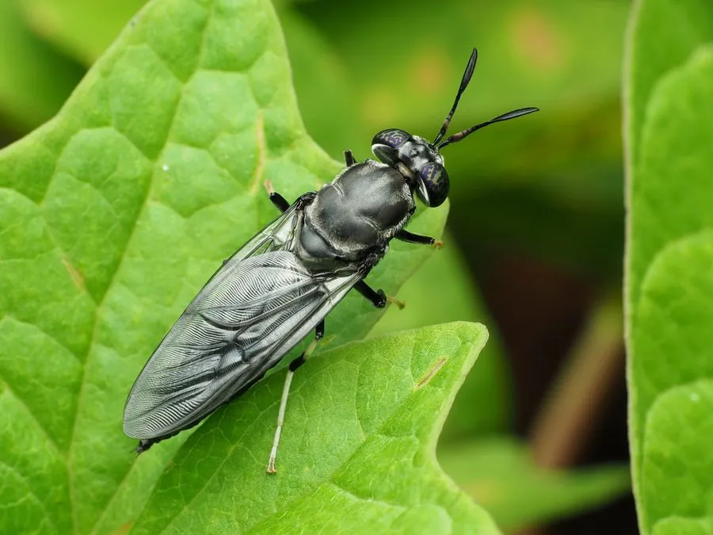

昆虫 · 动物界
黑水虻 Hermetia illucens

体黑、翅带金属光泽形似蜂的蝇类，幼虫腐食，能高效处理餐厨垃圾并作蛋白饲料，成虫不取食寿命很短。
- 分类
- 门节肢动物门纲昆虫纲目双翅目科水虻科属黑水虻属
- 栖息环境
- 垃圾堆、畜禽粪便、腐烂果蔬和潮湿有机物中
- 地理分布
- 原产美洲，现扩散至全球热带、亚热带和温带地区，中国南北均有发现
- 保护级别
- 尚无保护级别；为人工大规模养殖的资源昆虫
物种志
黑水虻的体长约十五至二十毫米，体色黑色，翅透明而带蓝紫色的金属光泽，静止时翅平叠在背上，外形像一只瘦长的蜂。它的触角粗短，复眼黑色，足黑色而带白毛，腹部略扁。幼虫体呈乳白至淡褐色，体节分明，体表有细毛，老熟幼虫体长约二十毫米，行动迟缓。
它原产美洲，现随贸易和养殖扩散到全球热带、亚热带和温带地区，在中国南方和北方均有发现，栖息在垃圾堆、畜禽粪便、腐烂果蔬和潮湿的有机物中，成虫多在温暖季节出现，只活数天，不取食，仅靠幼虫期积累的养分完成交配产卵。幼虫是腐食性的，食量大、生长快，能把餐厨垃圾和粪污转化为虫体蛋白，是近年来备受关注的资源昆虫，虫体可作饲料蛋白，虫粪可作有机肥。它尚无保护级别，人工养殖种群规模很大。
形态与习性
- 体长约十五至二十毫米，体黑色
- 翅透明带蓝紫色金属光泽，形似蜂
- 幼虫乳白至淡褐，腐食性，食量大生长快
- 成虫不取食，寿命仅数天
- 利用处理餐厨垃圾与粪污，虫体作蛋白饲料
- 分布原产美洲，现全球热带至温带均有
趣味知识
- 它长得像蜂，其实是水虻，成虫连嘴都不用了。
- 一群幼虫能在几天内把一桶餐厨垃圾吃得干干净净。
- 它被当作资源昆虫养殖，虫体是优质的饲料蛋白。